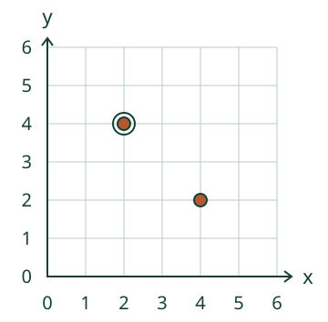
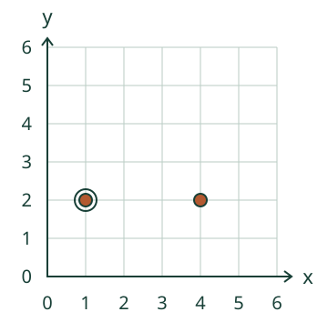
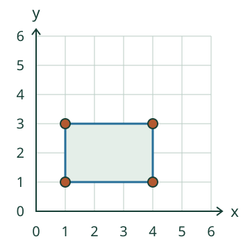

Loikka tarvitsee saman paikan uudelle kartalle. Lue ja merkitse.
Miksi lukeminen ja merkitseminen kuuluvat yhteen?
Sama pari, sama paikka
Ruudukkopaperin risteykseen merkitty piste voidaan kertoa toiselle kahdella luvulla. Origossa (0, 0) akselit risteävät. x kasvaa oikealle, y ylöspäin. Luvut kertovat välien määrät nollasta, eivät laskettavien viivojen määrää.
Ennakoi: säilyykö paikka, jos vaihdat luvut keskenään?

Siirtymästä uusi paikka
Lähtöpiste on (1, 2). Kolme väliä oikealle vie kohtaan (4, 2). Vain x muuttuu: 1 + 3 on 4. y on yhä 2. Uuden paikan koordinaatit luetaan edelleen origosta.

Suorakulmion kulmat
Vaakasivun päissä on sama y. Pystysivun päissä on sama x. Kun kulmat ovat (1, 1), (5, 1) ja (1, 4), puuttuva kulma on (5, 4). Oikea reuna antaa x:n 5, yläreuna y:n 4.
Nolla: (0, 3) on pystyakselilla, (0, 0) origossa. Ne ovat I neljänneksen rajalla. Sisäpuolella molemmat koordinaatit ovat nollaa suurempia.
Rakenna esimerkin saari
Vasen alakulma (1, 1), leveys 3 väliä ja korkeus 2 väliä. Kulmat ovat (1, 1), (4, 1), (4, 3) ja (1, 3). Merkintäjärjestys saa vaihtua; neljä eri paikkaa tarvitaan.

Lisätutkimus ja paperikartta
Piirrä pisteet (1, 3) ja (5, 3). Niiden puolivälissä on (3, 3): kaksi väliä kumpaankin päähän. Tee paperikartta, lue sen merkki ja pyydä toista merkitsemään sama paikka omalle kartalleen. Nimeämistä tai ääneen vastaamista ei tarvita.
Lopuksi: miten voit tarkistaa oman pisteesi lukemalla? Miksi oikealle siirtyessä y säilyy?
Opettajalle: integraatio ja rajat
Luokat 3–6. Pakollinen AND-ryhmä: M-COORD-READ-Q1 ja M-COORD-PLOT-Q1. Tässä molempia käytetään samassa tehtävässä: luetaan kuvasta lähtöpari ja rakennetaan tilanteen vaatima oma pistejoukko. Yksikkövälin kokonaisluvut 0–6; nollat ovat akseli-/origorajoja, eivät I neljänneksen sisäpisteitä.
Pienet siirtymät, vaaka-/pystysivuisen suorakulmion päätteleminen ja vaakasuora kokonaislukupuoliväli selitetään tässä. Ne ovat tuettuja sovelluksia, eivät uusia esitietolukkoja tai koko geometrian arviointi. Ruudun vaihtopainike ei täytä kummankaan vastauksen lukuja. Lähdekarttaan napauttaminen ei tuota merkitsemisvastausta.
Käytä tarvittaessa suurta/tunnusteltavaa ruudukkoa ja oikeaa ohjausta. Visuaalinen versio ei yksin osoita näkövammaisen kartanlukua. Molempien vastausten osuminen on vain paikallisen tehtävän tarkistus: ei formaali integraatiorubriikki, itsenäinen hallinta, viivästetty muistaminen, henkilöhistoria tai fyysinen kartankäyttönäyttö. Aikuinen saa lukea ohjeet.